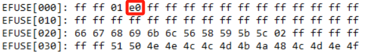
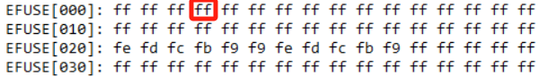

Functional Description
Security Image Protection (RSIP) aims at firmware protection. The whole or parts of Flash would be encrypted through AES to prevent from being copied. When CPU or Cache reads data from Flash in auto mode, the data will be decrypted on-the-fly, while the data will not be decrypted if read in user mode (user mode needs other APIs).
{kind=link}
{kind=link}
{kind=link}
{kind=link}
When reading data from the Flash or executing code, auto mode is chosen by default. Specific APIs are provided in SDK if manual read/write is needed.
RSIP-AES Entry
There are eight entries in RSIP-AES, and each entry has its own IV value, encryption algorithm (CTR or XTS), and can be enabled or disabled independently.
In auto mode, for the address within the enabled entries, the data will be decrypted on the fly when read in auto mode, otherwise the data is just plain text for RSIP and will not be decrypted on-the-fly when read.
RSIP OTP
Name |
Address |
Size |
Default |
Description |
|---|---|---|---|---|
RSIP Enable |
Logical Map 0x3[3] (for test) |
1 bit |
0 |
RSIP is enabled or not. 1: RSIP is enabled 0: RSIP is disabled |
RSIP Enable |
Physical Map 0x368[2] |
1 bit |
1 |
RSIP is enabled or not. 0: RSIP is enabled 1: RSIP is disabled |
RSIP Key 1 |
Physical Map 0x2C0 ~ 0x2DF |
32 bytes |
Each Byte 0xFF |
RSIP key will be stored in security OTP and auto-loaded to RSIP when boot. The most significant byte of the key is stored last (at the highest storage address). For example, the RSIP key is [32982100546871a0aa983b298756 2233], value 0x32 needs to be programmed into OTP 0x2C0, 0x98 into 0x2C1, and so on. |
RSIP Key 2 |
Physical Map 0x2E0 ~ 0x2FF |
32 bytes |
Each Byte 0xFF |
RSIP key will be stored in security OTP and auto-loaded to RSIP when boot. The most significant byte of the key is stored last (at the highest storage address). For example, the RSIP key is [32982100546871a0aa983b298756 2233], value 0x32 needs to be programmed into OTP 0x2C0, 0x98 into 0x2C1, and so on. |
RSIP Mode |
Physical Map 0x369[1:0] |
2 bit |
0x3 |
Encryption algorithm for Bootloader. 00/11b: XTS mode 01/10b: CTR mode |
RSIP Key1 Read Protection |
Physical Map 0x366[7] |
1 bit |
1 |
0: Enable read protection for RSIP Key1 to prevent from being read out. 1: Disable read protection for RSIP Key1 |
RSIP Key1 Write Protection |
Physical Map 0x367[0] |
1 bit |
1 |
0: Enable write protection for RSIP Key1 to prevent from being programmed to all 0 by hacker 1: Disable write protection for RSIP Key1 |
RSIP Key2 Read Protection |
Physical Map 0x367[1] |
1 bit |
1 |
0: Enable read protection for RSIP Key2 to prevent from being read out. 1: Disable read protection for RSIP Key2 |
RSIP Key2 Write Protection |
Physical Map 0x367[2] |
1 bit |
1 |
0: Enable write protection for RSIP Key2 to prevent from being programmed to all 0 by hacker 1: Disable write protection for RSIP Key2 |
RSIP Mode Write Protection |
Physical Map 0x367[3] |
1 bit |
1 |
0: Enable write protection for RSIP Mode to prevent from being programmed by hacker 1: Disable write protection for RSIP Mode |
How to Use RSIP
Secure Image
To use RSIP to protect the image, users should follow these steps:
Generate RSIP keys and IV values for each image, the keys and IV values can be random, and the keys should be 32 bytes.
Make sure RSIP related OTP bit are set according to RSIP OTP.
Write RSIP Key to OTP physical map. Users can read it back to check if it is written correctly. If not match, re-write it.
Using the following command to program RSIP key 1:
efuse wraw 0x2C0 20 E2A0D6500BBF1DD8DC212098C230EB731ECE3A81AA11D0E6E538FA36BBA4FF6E
Using the following command to program RSIP key 2:
efuse wraw 0x2E0 20 6AA34203018334474B25A0600996CA0968AA6228B886FF234B4EB9628B703C0A
Enable RSIP Key Read Protection and Write Protection to prevent key exposure and tampering after the written RSIP Key is confirmed.
Enable RSIP function.
When in device-development stage, it is recommended to program RSIP Enable bit in logical OTP, which can be disabled afterward.
Use
efuse rmapfirst to check value in 0x3, then enable RSIP bit (0x3 bit3).efuse rmap

efuse wmap 0x3 1 e8
When in device-MP stage,
RSIP_EN_PHYbit should be programmed to enable RSIP permanently.
efuse rraw

efuse wraw 0x368 1 FB
When in device-development stage, it is recommended to program RSIP Enable bit in logical OTP, which can be disabled afterward. Use
efuse rmapfirst to check value in 0x3, then enable RSIP bit (0x3 bit3).
efuse rmap

efuse wmap 0x3 1 08
When in device-MP stage, SECURE_BOOT_EN_PHY bit should be programmed to enable secure boot permanently.
efuse rraw

efuse wraw 0x368 1 FB
When in device-development stage, it is recommended to program RSIP Enable bit in logical OTP, which can be disabled afterward.
Use
efuse rmapfirst to check value in 0x3, then enable RSIP bit (0x3 bit3).efuse rmap EFUSE[000]: ff ff 21 a0 ff ff ff ff ff ff ff ff ff ff ff ff EFUSE[010]: ff ff ff ff ff ff ff ff ff ff ff ff ff ff ff ff EFUSE[020]: 02 01 01 01 00 00 02 02 00 00 fd ff ff ff ff ff EFUSE[030]: ff ff 05 06 09 0a 0b 09 07 06 02 03 00 00 02 01 efuse wmap 0x3 1 a8
When in device-MP stage,
RSIP_EN_PHYbit should be programmed to enable RSIP permanently.
efuse rraw RawMap[350]: ff ff ff ff ff ff ff ff ff ff ff ff ff ff ff ff RawMap[360]: ff ff ff ff ff ff ff ff ff ff ff ff ff ff ff ff RawMap[370]: ff ff ff ff ff ff ff ff ff ff ff ff ff ff ff ff RawMap[380]: ff ff ff ff ff ff ff ff ff ff ff ff ff ff ff ff efuse wraw 0x368 1 FB
{kind=link}
{kind=link}
Note
When OTP is programed, the Board needs to be reset to take the setting effect.
Generate encrypted images.
In SDK, the configuration file locates in
{SDK}\amebaxxx_gcc_project\manifest.jsoncan be used to configure security parameters, including RSIP.1"boot": 2 { 3 "IMG_ID": "0", 4 "IMG_VER_MAJOR": 1, 5 "IMG_VER_MINOR": 1, 6 "SEC_EPOCH": 1, 7 8 "HASH_ALG": "sha256", 9 10 "RSIP_IV": "0102030405060708", 11 }, 12 13 "//": "cert/app share IMG_ID/IMG_VER, rdp img is in app", 14 "app": 15 { 16 "IMG_ID": "1", 17 "IMG_VER_MAJOR": 1, 18 "IMG_VER_MINOR": 1, 19 "SEC_EPOCH": 1, 20 21 "HASH_ALG": "sha256", 22 23 "RSIP_IV": "213253647586a7b8", 24 }, 25 26 "SECURE_BOOT_EN": 0, 27 "//": "HASH_ALG: sha256/sha384/sha512/hmac256/hmac384/hmac512, hamc need key", 28 "HMAC_KEY": "9874918301909234686574856692873911223344556677889900aabbccddeeff", 29 30 "RSIP_EN": 0, 31 "//": "RSIP_MODE: 1 is XTS(CTR+ECB), 0 is CTR", 32 "RSIP_MODE": 1, 33 "CTR_KEY": "6AA34203018334474B25A0600996CA0968AA6228B886FF234B4EB9628B703C0A", 34 "ECB_KEY": "E2A0D6500BBF1DD8DC212098C230EB731ECE3A81AA11D0E6E538FA36BBA4FF6E", 35 36 "//": "Actual RDP IV is 16Byte which is composed by app RSIP_IV[7:0] + RDP_IV[15:8]", 37 "RDP_EN": 0, 38 "RDP_IV": "0123456789abcdef", 39 "RDP_KEY": "11223344556677889900aabbccddeeff11223344556677889900aabbccddeeff"
Set RSIP_EN=1, and set RSIP_MODE (0 for CTR mode, 1 for XTS mode), then fill the user-defined RSIP Key and IV in (XTS mode is recommended from the perspective of safety).
All images set the same RSIP mode and each image can have its own RSIP IV value, there are
bootfield for bootloader,appfield for application image.
Rebuild each project to generate encrypted image automatically as the following table, then download them into Flash.
Project
Encrypted image
Download address
km4_bootloader
km4_boot_all.bin
0x0800_0000
km0_application
km0_km4_app.bin
0x0801_4000
km4_application
km0_km4_app.bin
0x0801_4000
Project
Encrypted image
Download address
km4_bootloader
km4_boot_all.bin
0x0800_0000
kr4_application
kr4_km4_app.bin
0x0801_4000
km4_application
Project
Encrypted image
Download address
km4_bootloader
km4_boot_all.bin
0x0800_0000
km0_application
km0_km4_ca32_app.bin
0x0802_0000
km4_application
km0_km4_ca32_app.bin
0x0802_0000
ca32_application
km0_km4_ca32_app.bin
0x0802_0000
Reset the board. When RSIP image is loaded successfully, you can see
OTF ENprint out in log.1ROM:[V1.0] 2FLASH RATE:1, Pinmux:1 3OTF EN 4IMG1(OTA1) VALID, ret: 0 5IMG1 ENTRY[3000ad39:0] 6[KM4] [MODULE_BOOT-LEVEL_INFO]:IMG1 ENTER MSP:[30009fe4] 7[KM4] [MODULE_BOOT-LEVEL_INFO]:IMG1 SECURE STATE: 1 8[KM4] [MODULE_BOOT-LEVEL_INFO]:Flash ID: c8-65-17 9[KM4] [MODULE_BOOT-LEVEL_INFO]:Flash Read 4IO 10[KM4] FLASH HandShake[0x1 OK] 11[KM4] IMG2 OTF EN 12[KM4] [MODULE_BOOT-LEVEL_INFO]:KM0 XIP IMG[0c000000:5020] 13[KM4] [MODULE_BOOT-LEVEL_INFO]:KM0 SRAM[20040000:da0] 14[KM4] [MODULE_BOOT-LEVEL_INFO]:KM0 PSRAM[0c005dc0:20] 15[KM4] [MODULE_BOOT-LEVEL_INFO]:KM0 BOOT[20004d00:40] 16[KM4] IMG2 OTF EN 17[KM4] [MODULE_BOOT-LEVEL_INFO]:KM4 XIP IMG[0e000000:6d60] 18[KM4] [MODULE_BOOT-LEVEL_INFO]:KM4 SRAM[20010000:60] 19[KM4] [MODULE_BOOT-LEVEL_INFO]:KM4 PSRAM[0e006dc0:20] 20[KM4] [MODULE_BOOT-LEVEL_INFO]:IMG2 BOOT from OTA 1 21[KM4] [MODULE_BOOT-LEVEL_INFO]:Start NonSecure @ 0xe000115 ... 22[KM0] [MODULE_BOOT-LEVEL_INFO]:KM0 BOOT UP 23[KM4] [MODULE_BOOT-LEVEL_INFO]:VTOR: 20005000, VTOR_NS:0 24[KM0] [MODULE_BOOT-LEVEL_INFO]:KM0 APP_START 25[KM4] [MODULE_BOOT-LEVEL_INFO]:KM4 APP START 26[KM0] [MODULE_BOOT-LEVEL_INFO]:KM0 CPU CLK: 40000000 Hz 27[KM4] [MODULE_BOOT-LEVEL_INFO]:IMG2 SECURE STATE: 0 28[KM0] [MODULE_BOOT-LEVEL_INFO]:KM0 VTOR:0x20000000 29[KM4] [MODULE_BOOT-LEVEL_INFO]:KM4 BOOT REASON: 0
Note
When RSIP_EN is 1, the generated application image (km0_km4_app.bin) has already been encrypted individually before combination.
Considering the KM0 and KM4 application image are combined, users need to download the image only once (km0_km4_app.bin).
If you don’t use J-Link to download, you can download the encrypted images to the address with ImageTool.
For the IV value in manifest.json, only the lower 8 bytes will be used when doing encryption/decryption, the higher 8 bytes come from the address, so that every block has a different IV value, and users must pay attention that, if the virtual address of km4_bootloader, km0_km4 application image needed to be changed, the shell script for image encryption should be changed at the same time, users may ask Realtek for help if needed.
Note
Secure image shouldn’t use RSIP, which will be encrypted by RDP. For more information, refer to .
1FLASHRATE:1 2OTF EN 3IMG1(OTA1) VALID, ret: 0 4IMG1 ENTRY[3000af9d:0] 5[MODULE_BOOT-LEVEL_INFO]:IMG1 ENTER MSP:[30009fec] 6[MODULE_BOOT-LEVEL_INFO]:IMG1 SECURE STATE: 1 7[MODULE_BOOT-LEVEL_INFO]:Flash ID: c8-40-19 8[MODULE_BOOT-LEVEL_INFO]:Flash Read 4IO 9FLASH HandShake[0x1 OK] 10[MODULE_BOOT-LEVEL_INFO]:PSRAM Ctrl CLK: 500000000 Hz 11[MODULE_BOOT-LEVEL_INFO]:Init WB PSRAM 12CalNmin = 9 CalNmax = 1f WindowSize = 17 phase: 1 13IMG2 OTF EN 14[MODULE_BOOT-LEVEL_INFO]:KR4 XIP IMG[0c000000:6d520] 15[MODULE_BOOT-LEVEL_INFO]:KR4 PSRAM[60180000:1744] 16[MODULE_BOOT-LEVEL_INFO]:KR4 SRAM[0c06ec64:20] 17[MODULE_BOOT-LEVEL_INFO]:KR4 BOOT[20040000:40] 18[MODULE_BOOT-LEVEL_INFO]:KR4 PMC[20004c20:160] 19IMG2 OTF EN 20[MODULE_BOOT-LEVEL_INFO]:KM4 XIP IMG[0e000000:49440] 21[MODULE_BOOT-LEVEL_INFO]:KM4 PSRAM[60000000:1ae0] 22[MODULE_BOOT-LEVEL_INFO]:KM4 SRAM[0e04af20:20] 23[MODULE_BOOT-LEVEL_INFO]:KR4 PMC[20004e00:200] 24[MODULE_BOOT-LEVEL_INFO]:IMG2 BOOT from OTA 1
Note
When RSIP_EN is 1, the generated application image (
kr4_km4_app.bin) has already been encrypted individually before combination.Considering the KR4 and KM4 application image are combined, users need to download the image only once (
kr4_km4_app.bin).If you don’t use J-Link to download, you can download the encrypted images to the address with ImageTool.
For the IV value in
manifest.json, only the lower 8 bytes will be used when doing encryption/decryption, the higher 8 bytes come from the address, so that every block has a different IV value, and users must pay attention that, if the address of km4_bootloader, kr4_km4 application image needed to be changed, the shell script for image encryption should be changed at the same time, users may ask Realtek for help if needed.
ROM:[V1.2] FLASHRATE:1 OTF EN
Note
When
RSIP_ENABLEis 1, the generated application image (km0_km4_ca32_app.bin) has already been encrypted individually before combination.Considering the images of KM0/KM4/CA32 applications are combined, you only need to download the image once (
km0_km4_ca32_app.bin).If you don’t use J-Link to download, you can download the encrypted images to the address in the table above with ImageTool.
For the IV value in
manifest.json, only the lower 8 bytes will be used when doing encryption/decryption, the higher 8 bytes come from the adrress, so that every block has a different IV value. Pay attention that if the virtual address of km4_bootloader and km0_km4_ca32 application image needed to be changed, the shell script for image encryption should be changed at the same time. Ask Realtek for help if needed.
Secure Data Encryption/Decryption
Caution
XIP is forbidden when plaintext or encrypted data needs to be written into the Flash.
For RSIP, it can only decrypt data on the fly in auto mode when CPU/cache reads from a Flash address which is within the range of enabled entries. If users want to encrypt data, another IP called IPsec is provided.
Use any of the algorithms supported in IPsec to encrypt and decrypt data.
Use IPsec to encrypt data, then put the encrypted data in target address in Flash, enable an entry for the encrypted data, and the data will be auto decrypted when CPU/cache reads from Flash in auto mode. (However, in this way, only CTR/XTS mode is supported, and example is provided in SDK).
Troubleshooting
Problem |
Possible Causes |
Solutions |
|---|---|---|
Boot is failed after reset when using RSIP |
RSIP is not enabled. |
Check OTP logical map, make sure RSIP is enabled |
RSIP Key error or writing key fails. |
Check RSIP key setting |
|
Images has not been encrypted before download. |
Encrypt images and re-download |
|
Boot log doesn’t show OTF EN |
RSIP is not enabled. |
Check OTP logical map, make sure RSIP is enabled |
Boot still fails after checking RSIP key and images |
Select inappropriate device profile in ImageTool. |
Click button on ImageTool and select profile according to chip number. |